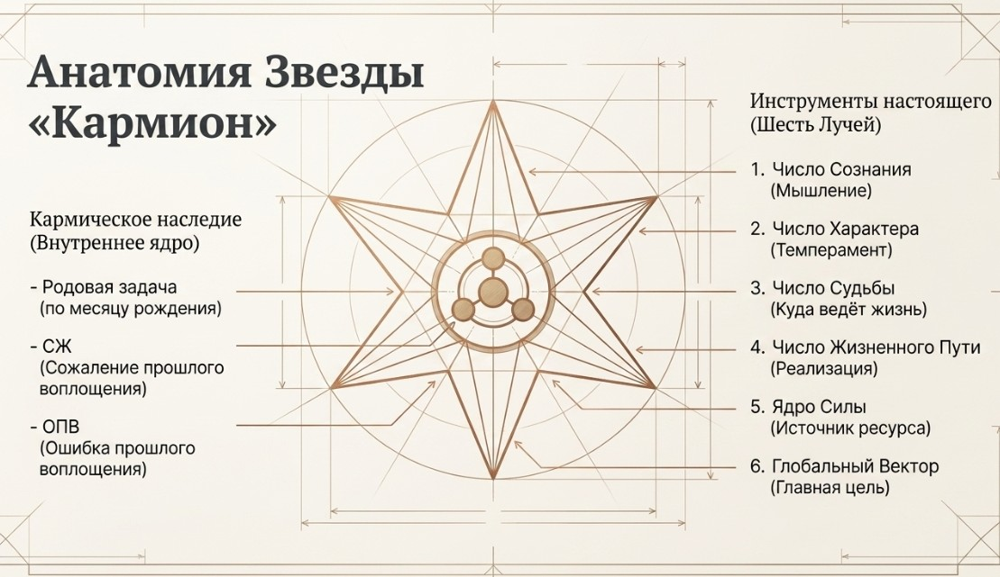
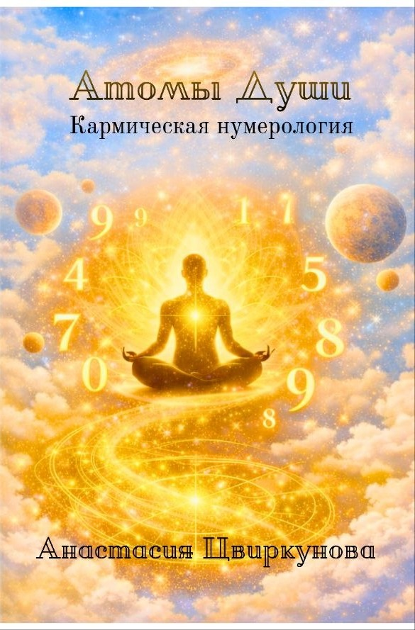

Авторская система анализа судьбы по дате рождения
Родовая линия, кармические индикаторы прошлых воплощений и шесть Лучей личности — всё, что несёт ваша дата рождения, можно прочитать точно, а не приблизительно.
Нумерология — это учение о связи чисел с характером человека, его судьбой и событиями жизни. В её основе лежит идея, что за датой рождения, именем или другими значимыми числами скрывается не случайный набор цифр, а своего рода код, который можно прочитать и истолковать. Корни нумерологии уходят на тысячи лет назад — числа как священные символы почитали в Древнем Египте, Вавилоне, Индии и Греции. Со временем в разных культурах сложились разные школы работы с числами: где-то во главу угла ставили дату рождения, где-то — имя, где-то — связь чисел с планетами или архетипами. Именно из этого многообразия традиций и родились три системы, которые легли в основу «Кармион»: пифагорейская, ведическая нумерология и нумерология Таро.
Эта система связана с именем древнегреческого философа Пифагора, который считал, что в основе мироздания лежат числа и пропорции между ними — а значит, познав числа, можно познать законы, по которым устроен мир. Классический метод пифагорейской нумерологии — редукция: любое число, сколь угодно большое, последовательно складывается цифра к цифре, пока не получится однозначное значение от 1 до 9, и именно эти «чистые» числа несут основной смысл. Считается, что каждое такое число описывает определённый набор качеств характера — например, единица связана с лидерством и самостоятельностью, а девятка — с мудростью и завершением циклов. Самый известный практический инструмент этой традиции — квадрат Пифагора (психоматрица): дата рождения раскладывается на цифры, из которых собирается таблица 3×3, показывающая сильные и слабые стороны личности.
Эта система пришла из Древней Индии и неразрывно связана с ведической астрологией. Её ключевое отличие от пифагорейской в том, что здесь каждое число от 1 до 9 — это не просто абстрактный символ, а олицетворение конкретной планеты и её энергии: единица связана с Солнцем, двойка — с Луной, и так далее. Считается, что через дату рождения человек получает вибрацию определённых планет, а значит, и их качества, уроки и кармические задачи. В отличие от западной нумерологии, где акцент делается в основном на числе судьбы, ведическая традиция рассматривает сразу несколько ключевых чисел — число души, число судьбы и число имени, — и то, как они сочетаются между собой, дружат или конфликтуют по своей планетарной природе.
Здесь числа связываются с 22 Старшими арканами колоды Таро — от Шута (0) до Мира (21). Каждый аркан — это не гадальная карта в привычном смысле, а архетип, целая жизненная тема: Маг — начало и воля, Отшельник — уединение и мудрость, Смерть — трансформация и обновление. В нумерологии Таро дату рождения (а иногда и другие значимые числа) сводят к диапазону от 1 до 22 и таким образом находят «свой» аркан — архетипическую энергию, которая описывает характер, жизненную задачу и то, через какой урок предстоит пройти человеку. Этот подход даёт более образный, символический язык описания личности — в дополнение к сухим числовым значениям классической нумерологии.
В основе «Кармион» лежат четыре направления нумерологии: пифагорейская нумерология, кармическая нумерология, ведическая нумерология и нумерология Таро. У каждой из них — свой взгляд на то, что стоит за датой рождения человека, и свой способ об этом рассказывать.
По отдельности каждая традиция даёт лишь часть картины. Пифагорейская нумерология точно раскладывает характер и жизненный путь по числам, но почти не объясняет, откуда эти черты берутся. Кармическая нумерология раскрывает корни — родовые сценарии и задачи, с которыми человек пришёл в эту жизнь, — но менее конкретна в повседневном применении. Ведическая нумерология добавляет более глубокий, древний пласт понимания судьбы. А числа Таро дают образность — то, через что число легче почувствовать и запомнить, а не просто прочитать о нём.
«Кармион» соединяет эти четыре голоса в один связный рассказ о человеке: там, где одно число называет черту характера, другое объясняет её происхождение, третье — её более глубокий смысл в судьбе, а четвёртое даёт образ, через который эта черта становится по-настоящему понятной.
В систему вошли не все существующие в нумерологии методы, а только те, что прошли проверку на практике. Отбор строился на нескольких принципах:
Такой отбор сделан осознанно: вместо объёмной книги на несколько сотен страниц, в которой легко потеряться среди множества чисел и слоёв, «Кармион» даёт компактную и цельную картину — то, что действительно можно удержать в голове и применить к себе.
Расчёт по звезде «Кармион» — это не набор разрозненных цифр из разных традиций, а связный портрет человека: кто он, какие сценарии несёт из рода, какие уроки прошлых воплощений стоят за сегодняшними трудностями и что определяет его судьбу задолго до момента рождения.
Это не гадание и не общие фразы, подходящие всем. Это рабочий инструмент, к которому можно возвращаться снова и снова — сверяться в момент трудного решения и лучше понимать, почему в жизни повторяются одни и те же ситуации.
«Кармион» объединяет классическую, пифагорейскую и ведическую нумерологию, а также нумерологию Таро — в единую матрицу из 22 кармических энергий. Цель системы — не описать характер, а дать инструмент: показать, в чём человек сейчас проживает свою энергию в минус, и куда её направить, чтобы жизнь начала налаживаться.

По месяцу рождения — кармическая программа, унаследованная от рода.
Сожаление и ошибка прошлого воплощения — что тянется из прошлой жизни.
Число Сознания, Характера, Судьбы, Жизненного Пути, Ядро Силы, Глобальный Вектор.
Все девять чисел складываются в звезду «Кармион» — шестиконечную звезду с тремя кармическими значениями внутри. Рассчитать свою звезду можно в калькуляторе.
Я создала «Кармион» — авторскую систему кармической нумерологии, объединяющую классическую, пифагорейскую и ведическую нумерологию, а также нумерологию Таро.
Провожу личные консультации, обучаю методике учеников и объясняю карму простым языком — без мистики ради мистики, только то, с чем реально можно работать.
«Создавая „Кармион“, я хотела объединить расчёт, структуру и толкование в единую систему — точную, воспроизводимую и живую».
Скоро здесь появится больше отзывов.
Курс проведёт от первого расчёта до полной консультации: как считать всю матрицу и что означает каждое конкретное число.
От первого знакомства до полного владения методикой — выбирайте, насколько глубоко хотите погрузиться.
Вводный семинар — видео и методичка в закрытой группе. Считаете свою звезду вместе со мной, без подготовки.
Полное обучение методике — расшифровка каждого числа, связки, прогностика — плюс личный доступ к калькулятору звезды.
День рождения — это индикатор того, какая родовая душа воплотилась снова, и какую задачу рода она несёт с самого детства.
Кто вернулся: Знаменитый, мудрый предок. Род нуждается в опоре.
В детстве: Самостоятельны, не терпят руководства.
Угроза: Давление родителей разрушает их изнутри; силе некуда деваться.
Кто вернулся: Дед или прадед (даже в теле девочки). Мужской стержень.
В детстве: Рано взрослеют, с трудом принимают помощь.
Угроза: Живут с разрушительным ощущением, что не имеют права на слабость.
Кто вернулся: Бабушка или прабабушка по материнской линии.
В детстве: Врождённая гиперответственность за чужие эмоции.
Угроза: Повторение судьбы женщин рода — жизнь только ради других.
Суть: Душа пришла разделить карму с отцом, если его род согрешил (измены, разводы, зависимости).
Зона конфликта: Патриархальная линия.
Цикличный сценарий: Во взрослой жизни сценарий давления продолжается через начальников и жёстких мужчин, проверяющих на прочность.
Суть: Душа вернулась для разрешения давнего конфликта с женской ветвью семьи.
Зона конфликта: Связь с матерью всегда сложная.
Циклический сценарий: Конфликт переносится на всех женщин вокруг (подруг, коллег, свекровей), пока женская линия не будет исцелена.
Кто это: Последняя абортированная душа рода, получившая второй шанс.
Скрытая боль: Постоянное, необъяснимое чувство, что нужно «заслуживать» право жить.
Поведение: Болезненный страх потерять отношения; соглашаются на меньшее там, где их недооценивают.
Кто это: Душа вернулась почти сразу после ухода, чтобы сохранить важный опыт.
Скрытая боль: Несут незавершённые эмоции прошлой жизни.
Поведение: Необычная зрелость с детства, но тотальная неспособность отпускать прошлое (переезд ощущается как предательство).
Кто это: Души отверженных, изгнанных родственников.
Крест: Чувствуют себя чужими в семье, вынуждены постоянно доказывать своё право быть собой и идти своим путём.
Кто это: Абсолютно чужая душа, впервые попавшая в эту родовую иерархию.
Крест: Чувствуют себя «не такими» даже в любящей семье.
Миссия: Именно они обрывают токсичные многолетние сценарии (разводы, бедность).
Кто это: Магический практик или целитель рода.
Крест: Бессознательно впитывают чужую боль. Если отвергают дар, жизнь создаёт кризисы, требующие интуиции.

Принято считать карму карающей — но она справедлива и щедро вознаграждает тех, кто следует её правилам. Книга простым языком объясняет, как читать родовую линию, месяц воплощения, кармические индикаторы прошлых жизней и обратку кармы по годам — на примерах и с формулами расчёта.